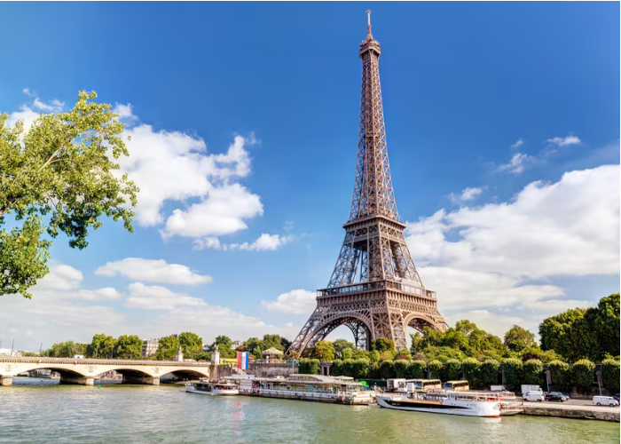

Torre Eiffel

História das luzes da Torre Eiffel
Antes da eletricidade
Em 1889, quando a Torre foi inaugurada, ela foi instalada com dez mil luzes a gás para iluminar a torre do chão. Um farol foi instalado no topo.
Pós eletricidade
Na década de 1990, as luzes a gás foram substituídas por lâmpadas elétricas. Durante a Feira Mundial de 1937, a estrutura da torre foi iluminada sob o primeiro andar e entre os quatro pilares. Trinta holofotes foram adicionados para iluminar a Torre de fora. Em 1958, eles foram substituídos por 1.290 pequenas luzes ao redor da Torre.
Renovações posteriores
Em 1985, o sistema de iluminação foi renovado, com novas 336 luzes de sódio-vapor dentro da estrutura. Em 1º de janeiro de 2000, 20.000 luzes cintilantes foram colocadas na estrutura da Torre. O farol no topo foi substituído pelos quatro holofotes.
História dos restaurantes da Torre Eiffel
- 1889: Na época da inauguração da torre, a Torre Eiffel abriu quatro majestosos pavilhões de madeira no primeiro andar. Cada um dos restaurantes — Flamad, Russian Restaurant e Brébant — poderia acomodar 500 pessoas.
- 1937: Eles foram demolidos para a Exposição Internacional de 1937. O primeiro andar, que tinha acabado de ser renovado, tinha dois novos restaurantes.
- Década de 1980: Os restaurantes foram mais uma vez substituídos por La Belle France e Le Parisien.
-
1993: O restaurante Jules Verne tornou-se parte da Torre Eiffel.
- 1996: Altitude 95, localizado a 95 metros acima do nível do mar, tornou-se o mais novo destaque da torre.
- Anos 2000: O restaurante no primeiro andar foi chamado 58 Tour Eiffel.
- 2022: Madame Brasserie substituiu a 58 Tour Eiffel.
Arquitetura da Torre Eiffel
Feita de ferro, foi inicialmente referida como 'La Dame de Fer' ou a Dama de Ferro. É feita inteiramente de trabalho de treliça de ferro e montado por rebites. Cada peça foi feita sob medida em um local diferente e transportada de carruagem para o canteiro de obras. As diferentes peças foram então montadas no local. A construção levou 2 anos e 2 meses para ser concluída.
Eiffel foi acusado de projetar uma torre que não está em conformidade com os princípios da engenharia. Mas ele e sua equipe eram experientes construtores de pontes que levaram em consideração a resistência ao vento durante seu projeto e concepção. A base forte e os arcos curvos foram calculados para suportar ventos. O fato de ainda estar de pé confirma a razão dos criadores desta ousada e bela estrutura!
Torre Eiffel Hoje
A Torre Eiffel é sinônimo da França e impressionou milhões de visitantes desde que foi construída. Um dos locais mais visitados e presente na lista de desejos de todos os viajantes, esta é realmente uma das 7 maravilhas do mundo moderno!
Subir ao topo desta incrível estrutura para ter uma vista panorâmica da bela cidade de Paris é uma experiência memorável. Aproveite esta bela oportunidade e experimente a fusão de estética, arquitetura e engenharia!